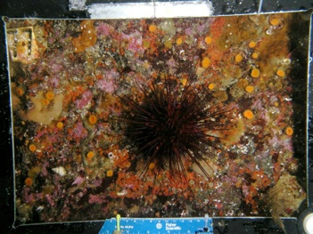

Robin Elahi, PhD
Marine Community Ecology and Population Biology
Research
Resource use at the local scale – the role of diversity, top-down control, and indirect effects
Resource competition theory predicts an inverse relationship between species richness and resource availability. More species should more fully exploit available resources, decreasing the rate of colonization by both native and exotic species. Space is the limiting resource for sessile organisms on marine rocky substrata, and the availability of space is limited by recruitment and growth and increased through senescence, disturbance and consumption. Surveys and a three-month urchin addition experiment were used to test whether consumers mediate variation between prey richness and resource (space) use in subtidal rock wall communities. In summary, urchins generate available space directly by consuming large invertebrates and macroalgae, and indirectly by facilitating chitons, which maintain patches of space by consuming microscopic recruits of adult sessile organisms. Interestingly, prey richness may buffer the impacts of urchin grazing – and thus we highlight the need to study the effects of species richness on community structure and function in the context of other relevant ecological processes.

Red urchin (Strongylocentrotus franciscanus) on a subtidal rock wall.
A second experiment tested the extent to which urchins and chitons are redundant in the maintenance of available space. We reduced the densities of urchins and chitons on subtidal rock walls for nine months. The effects of grazers were interpreted in the context of natural temporal variation by monitoring the benthic community one year before, during, and after grazer removal. The removal of each grazer in isolation had no effect on the epilithic community, but the removal of both grazers caused an increase in sessile invertebrates. The increase was due primarily to clonal ascidians, which displayed a large (~75%) relative increase in response to the removal of both grazers. However, the observed non-additive responses to grazer removal were temporary and smaller than seasonal fluctuations. The data demonstrate that urchins and chitons can be redundant in the maintenance of available space, and highlight the value of drawing conclusions from experimental manipulations within an extended temporal context.